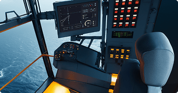
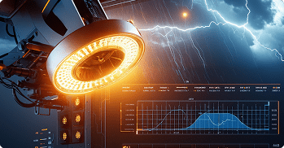
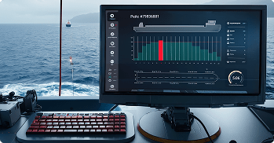

ОБЕСПЕЧЕНИЯ ДЛЯ МОРСКОЙ
ТЕХНИКИ НА ЗАКАЗ

НАША КОМПАНИЯ
ПОЧЕМУ ВЫБИРАЮТ НАС
Мы ценим командную работу, инновации и постоянное обучение. Наша цель — сделать каждое решение функциональным и удобным для пользователей. Мы слушаем отзывы клиентов и учитываем их потребности в процессе разработки. Давайте сделаем вашу работу проще, безопаснее и эффективнее с помощью нашего ПО!
НАШИ РАЗРАБОТКИ
Мы занимаемся разработкой программного обеспечения для морского транспорта, грузоподъемной техники и разнопрофильного промышленного оборудования
- Система планирования погрузки/разгрузки
- Оптимизируйте процессы с помощью нашей системы, которая анализирует остойчивость судна и обеспечивает безопасность операций.
- Система помощи оператору крана
- Используя машинное зрение и ИИ, мы поддерживаем операторов кранов в реальном времени, повышая безопасность и эффективность работы.
- Система анализа технического состояния оборудования
- Мониторинг состояния оборудования помогает избежать незапланированных простоев и снижать затраты на обслуживание.
- Система проектирования и расчетов судов
- Наше ПО выполняет сложные расчеты прочности и остойчивости, что позволяет эффективно проектировать морские объекты.
- Дополнительные разработки
- Запланировано создание ещё нескольких небольших программных продуктов для грузоподъемной техники и морской техники.
НАПРАВЛЕНИЯ РАЗРАБОТКИ

Системы автоматического управления
Мы разрабатываем программное обеспечение для управления в сфере автоматизации управления кранами. Это направление включает создание комплексных систем, которые обеспечивают безопасное и эффективное управление механизмами.
- ОС: Debian
- Бэкенд: Rust
- Фронтенд: Dart/Flutter
- СУБД: PostgreSQL
- ЯП для ПЛК: МЭК 61131-3
- Связь модулей ПО: TCP/UDP, Profinet, CAN
Система управления краном CraneWare.App

Аналитика, Искусственный интеллект и Машинное зрение
Мы разрабатываем систему аналитики для кранов, основанную на искусственном интеллекте (ИИ) и машинном зрении. Она использует передовые технологии для мониторинга, анализа и оптимизации работы механизмов в реальном времени.
- ОС: Debian
- Бэкенд: Rust, Python
- Фронтенд: Dart/Flutter
- СУБД: PostgreSQL
- Машинное обучение: Pytorch, Tensorflow, OpenCV
- Связь модулей ПО: TCP/UDP
Программа аналитики крана Operion.Diag

Промышленное и эксплуатационное расчетное ПО
Мы разрабатываем программное обеспечение для расчетов прочности и остойчивости судов. Это ПО позволяет инженерам, проектировщикам и эксплуатирующим организациям выполнять сложные расчеты, необходимые для обеспечения безопасности и надежности морских и речных судов.
- ОС: Debian
- Бэкенд: Rust
- Фронтенд: Dart/Flutter
- СУБД: PostgreSQL
- Связь модулей ПО: TCP/UDP
Программа расчета прочности и остойчивости судна BoardTrix
ПРОДУКТЫ